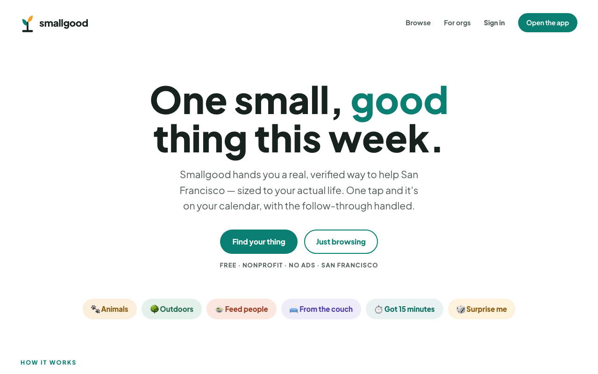

Smallgood
one small, good thing this week
what it is
A volunteer app for San Francisco. Real, verified shifts at real organizations — food banks, park cleanups, animal shelters, letter-writing from your couch — that you can claim in a couple of taps. Free, nonprofit, no ads.
the problem
Wanting to help is easy; actually helping is strangely hard. Most volunteering starts with a research project — forms, orientations, dead links, phone tag — and most good intentions don't survive it. The gap between "I should do something" and doing something swallows almost everyone.
how it works
Browse by mood — animals, outdoors, feed people, from the couch, got 15 minutes. When something fits your actual life, one tap claims it: it lands on your calendar, the details and reminders are handled, and all that's left is showing up. That's the whole loop, and it's the point — one small, real thing this week beats a grand plan for someday.
see it
smallgood.org — live now, growing quietly.
